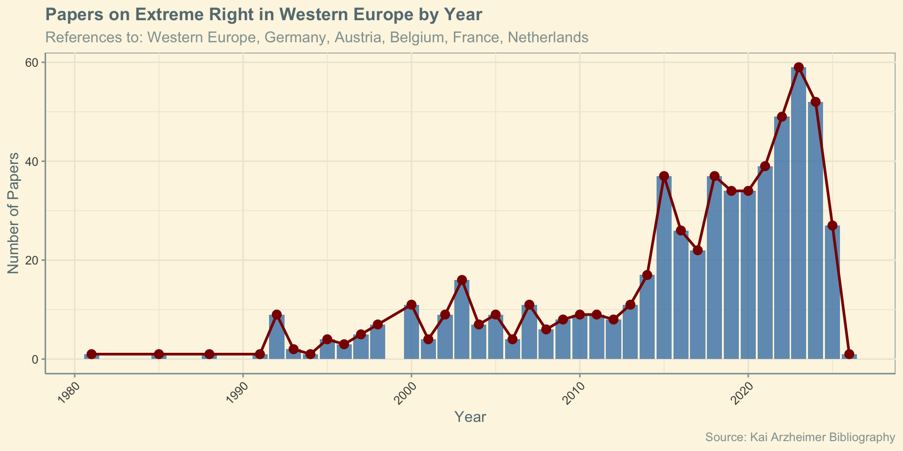

Far-Right in Western Europe
The Far Right (Week 2)
Dr. Christos Vrakopoulos
Important Announcements
Session Cancellation
The Week 5 session is cancelled.
Course Schedule
Please check the most up-to-date course schedule on Learn.
Today’s Lecture
- Part 1: The Puzzle
- Part 2: Five Trajectories
- Part 3: Comparative Synthesis
Part 1: The Puzzle
Why Western Europe?
First region where modern far-right broke through
- Established, wealthy democracies
- France, Germany, Austria, Netherlands, Belgium
- 1980s-1990s: similar conditions
Yet timing varies dramatically:
- France: 1984
- Austria: 1986
- Belgium: 1991
- Netherlands: 2002
- Germany: 2013/2017
- Given broadly similar exposure to deindustrialisation, immigration, and European integration, why do radical-right parties become electorally relevant at such different times?
The academic attention
Part 2: Five Trajectories
France: Front National / Rassemblement National
Origins:
Founded 1972 (Jean-Marie Le Pen)
United nationalists, Poujadists, ex-OAS (Algeria)
Fringe until 1983 (<1%)
Holocaust denial
Breakthrough:
1983 Dreux: Centre-right coalition with FN
1984: 11% European Parliament
Core Ideology:
Leadership: Jean-Marie (1972-2011) → Marine (2011-present)
Nativism: Anti-immigration (esp. North African)
Economic: Left turn under Marine (welfare chauvinism)
Social: Traditional/Catholic → Secular under Marine
EU: Hard Eurosceptic → “Reform from within”
France: Trajectory & Pattern
Austria: Freedom Party (FPÖ) & BZÖ
Origins:
Founded 1956 (former Nazis, pan-German nationalists)
Third “camp” in Austrian politics (alongside Social Democrats and Christian Democrats)
Member of Liberal International (!!) → shows pre-Haider ideological ambiguity - Stable 5% (1956-1986)
1986: Jörg Haider revolution
Age 36, charismatic, provocative
Shifts right: anti-immigration, anti-EU
Core Ideology:
Nativism: Anti-immigration (Muslims, Eastern Europeans)
Economic: Traditionally -> Welfare chauvinism (Rathgeb 2021: ‘exclusive solidarity’)
Social: Traditional Catholic
EU: Soft Eurosceptic: critical of integration, but not outright exit
Key leaders: Haider (1986-2005) → Split → Strache (2005-2019) → Kickl (2021-)
Austria: Trajectory & Pattern
Netherlands: Succession of Parties
Failed extreme parties (1980-2002):
Centre Party (CP): Neo-Nazi, banned 1998
Centre Democrats (CD): Radical-right; never more than 3 seats
Marginalised as too racist for Dutch voters and competitors
2002: Pim Fortuyn changes game
Personally liberal on drugs, sexuality, gay rights (Fortuyn was openly gay)
Simultaneously: sharply anti-Islam, anti-multiculturalism
Assassinated 9 days before election
LPF wins 17% but then rapidly collapses (internal chaos, leader loss)
PVV - Wilders:
Founded 2006 as Geert Wilders’ personal vehicle (no formal members).
Nativism: Anti‑Islam, anti‑Muslim & some other migrants
Economic: Welfare‑chauvinist, blurry but not clearly neoliberal
Social: Liberal rhetoric, authoritarian in practice
EU: Hard, identity‑driven Euroscepticism
- Key insights: far-right fragmented due to electoral system; new players entered the game Forum for Democracy (FvD), JA21, BBB
Netherlands: Trajectory & Pattern
Germany: Alternative for Germany (AfD)
The 30-year puzzle:
NPD/Republicans: neo‑Nazi / extreme right, never federal → stigma + cordon sanitaire
2013 AfD: soft Euro‑sceptic, market‑liberal, conservative, “respectable” professors
2015: refugee crisis + leadership split → radicalization, immigration central
2013: AfD founded (NOT far-right initially)
Soft Eurosceptic (anti-Euro bailout)
Economists, professors
Respectable image
2015: TRANSFORMATION
Internal conflict between Lucke’s moderate, economics‑driven wing and a national‑populist wing culminates in the 2015 split
Refugee crisis (1 million arrivals)
Core Ideology (post-2015):
Nativism: Anti‑immigration, anti‑Islam, refugee “threat”
Economic: Mixed: market‑liberal + welfare chauvinism
Social: Conservative/authoritarian, “liberal” rhetoric vs Islam
EU: From soft to harder Eurosceptic, system‑critical
Why 30-year delay?
Past + stigma + cordon sanitaire delayed a PRRP despite similar demand conditions
A moderate, Euro‑issue entry + a salient crisis (refugees 2015/16) were needed to “normalize” the far right and crystallize a new cleavage
Germany: Trajectory & Pattern
Belgium: Flemish Bloc/Interest (VB)
Unique context:
Flanders (Dutch, 60%) vs. Wallonia (French, 40%)
Separate party systems
VB = Flemish-only party
Origins (Vlaams Blok):
1978: Split from VU (moderate Flemish nationalists)
Radical wing: independence NOW
1991: “Black Sunday” breakthrough (6.6%)
Banned (2004), immediately rebranded as “Flemish Interest”
1989-present: Cordon sanitaire
All parties sign agreement
NEVER form coalition with VB
It limits power but also reinforces VB’s anti‑establishment populism
Core Ideology VB:
Nativism: Anti‑immigration + anti‑Walloons
Nationalism: Flemish separatist
Economic: Right‑wing, economic nativism
Social: Authoritarian‑conservative
EU: Radical‑right Eurosceptic
Belgium: Trajectory & Pattern
Part 3: Comparative Synthesis
Overall Patterns
Timing Variation: Breakthrough vs. Current Power
| Country | Breakthrough | Context | Status Today (2024-2026) |
|---|---|---|---|
| France | 1984 | Dreux coalition | RN is the leading opposition force. Jordan Bardella dominates 2027 presidential polls (~35%) amid Le Pen’s legal appeals. |
| Austria | 1986 | Haider leadership | 2024 Election Winner (28.8%). Currently in opposition after being excluded by the ÖVP-SPÖ-NEOS coalition. |
| Belgium | 1991 | “Black Sunday” | Second largest in Flanders. Vlaams Belang remains isolated by the cordon sanitaire despite high regional polling. |
| Netherlands | 2002 | Fortuyn murder | Largest party in Parliament. Left the Schoof cabinet (3rd June 2025), triggering a major political crisis. |
| Germany | 2017 | Refugee crisis | Bundestag’s second largest party. Secured 20.8% in the 2025 snap election; currently the primary opposition to the Merz (CDU) gov. |
Key Synthesis: While grievances (demand) remain constant across these wealthy democracies, the timing of the breakthrough depends on the supply: credible leaders, organizational shifts, and mainstream party reactions.
Who Votes Far-Right? (ESS Data)

The Big Puzzles
- Germany’s 30-year delay – strong latent demand but no credible supply?
Why resistant until 2017?
Same conditions as France 1980s
- Austria’s government curse
Why collapse when entering govt?
Twice! (2000, 2017)
- Belgium’s cordon sanitaire
Why isolation works for 35 years?
Yet doesn’t stop electoral growth
- Netherlands’ moderation
Why extremists (CP/CD) failed?
But “moderate” anti-Islam succeeded?
- Regional variation
VB only Flanders, not Wallonia
Why within-country differences?
Patterns We Observe in Western Europe
Demand-Side Patterns
- Timing varies dramatically: A 30-year span exists between breakthroughs (e.g., France 1984 vs. Germany 2017) despite similar socio-economic conditions.
- Historical legacies: National histories, such as the post-WWII stigma in Germany, shape the “possibility space” for far-right emergence.
- Mobilization gaps: While anti-immigrant or anti-elite attitudes are widespread, parties vary significantly in their ability to mobilize them into votes.
Supply & Strategic Patterns
- Diverse trajectories: Party development varies across the region: stable (France), volatile (Austria), fragmented (Netherlands), delayed (Germany), and isolated (Belgium).
- The Moderation Premium: Political success correlates with programmatic moderation; open extremism is typically linked to failure.
- Mainstream responses: Outcomes are shaped by how established parties react, ranging from cordon sanitaire to accommodation or position theft.
Takeaway: Far-right success is not automatic: it depends on how parties and mainstream actors structure similar grievances.
Course Roadmap
Cases (Weeks 2-6):
- Week 2: ✓ Western Europe
- Week 3: UK & Brexit
- Week 4: Scandinavia
- Week 5: Southern Europe
- Week 6: Eastern Europe
Theory (Weeks 7-10):
- Week 7: Demand-side
- Week 8: Supply-side
- Week 9: Competition & Normalization
- Week 10: Global patterns
Pedagogical approach: Accumulate puzzles from cases → Theory provides systematic answers